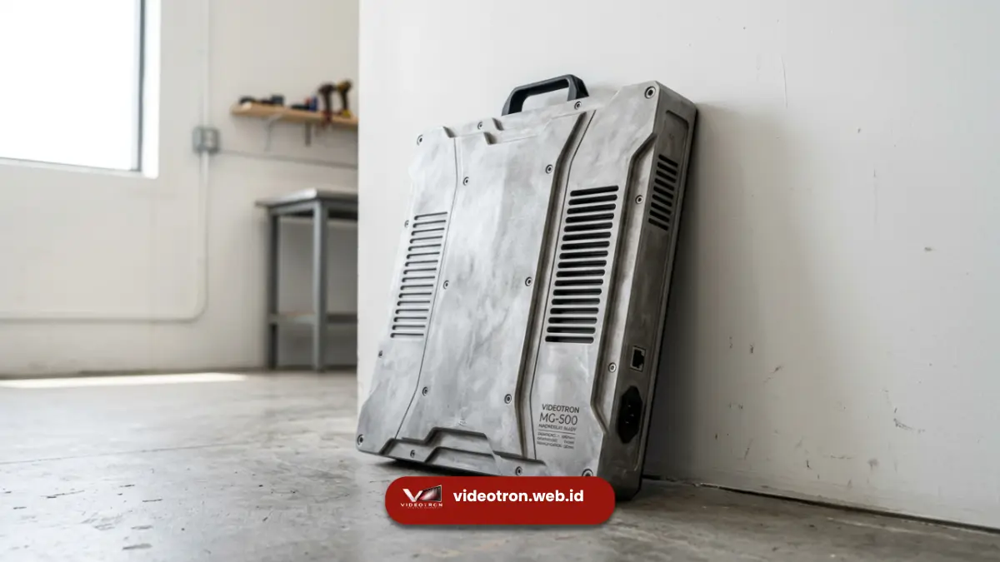

Material kabinet magnesium alloy adalah paduan logam berbasis magnesium yang digunakan sebagai rangka atau casing videotron karena bobotnya ringan, kekuatan strukturalnya tinggi, dan ketahanannya terhadap tekanan mekanis.
Material ini menjadi pilihan populer untuk videotron modern yang mengutamakan kemudahan instalasi dan efisiensi struktur bangunan.
Poin Penting:
- Magnesium alloy memiliki rasio kekuatan terhadap berat yang lebih tinggi dibanding aluminium konvensional.
- Bobot kabinet yang lebih ringan mengurangi beban struktur rangka penyangga videotron.
- Material ini tahan terhadap deformasi akibat guncangan dan getaran selama pengangkutan atau instalasi outdoor.
- Proses die-casting magnesium alloy memungkinkan presisi dimensi tinggi antar-modul kabinet.
- Perawatan kabinet magnesium alloy relatif rendah dibanding material logam lain yang mudah korosi.
- Apa Itu Material Kabinet Magnesium Alloy pada Videotron?
- Mengapa Bobot Kabinet Videotron Penting untuk Instalasi?
- Apa Kelebihan Magnesium Alloy Dibanding Material Kabinet Lain?
- Bagaimana Proses Pembuatan Kabinet Magnesium Alloy?
- Apa Saja Faktor yang Memengaruhi Kualitas Kabinet Magnesium Alloy?
- Apa Kesalahan Umum saat Memilih Kabinet Videotron?
- Tips Memilih Kabinet Magnesium Alloy untuk Kebutuhan Videotron
Apa Itu Material Kabinet Magnesium Alloy pada Videotron?
Kabinet magnesium alloy pada videotron adalah rangka modul LED yang dicetak dari paduan magnesium, umumnya dikombinasikan dengan sedikit aluminium dan zinc untuk meningkatkan kestabilan dimensi.
Rangka ini berfungsi sebagai dudukan modul panel LED sekaligus pelindung komponen elektronik di dalamnya.
Dalam industri videotron, kabinet bukan sekadar bingkai kosmetik. Kabinet menentukan kerataan permukaan layar, kepresisian sambungan antar-modul, serta daya tahan terhadap tekanan lingkungan seperti angin, panas, dan getaran.
Material yang dipilih untuk kabinet secara langsung memengaruhi umur pakai videotron secara keseluruhan.
Secara umum, magnesium alloy dipilih karena kombinasi tiga sifat utama: bobot ringan, kekuatan mekanis, dan kemampuan meredam getaran (damping capacity).
Ketiga sifat ini penting terutama untuk videotron berukuran besar yang dipasang pada ketinggian atau struktur gantung.
Mengapa Bobot Kabinet Videotron Penting untuk Instalasi?
Bobot kabinet videotron penting karena memengaruhi beban struktur penyangga, kemudahan pemasangan, dan biaya konstruksi rangka pendukung secara keseluruhan.
Videotron berskala besar biasanya terdiri dari puluhan hingga ratusan modul kabinet yang disusun membentuk satu layar utuh.
Jika setiap kabinet memiliki bobot berlebih, total beban yang harus ditopang oleh rangka baja atau dinding bangunan akan meningkat signifikan.
Hal ini berdampak pada kebutuhan struktur penyangga yang lebih kuat, yang pada akhirnya menambah biaya konstruksi dan waktu pengerjaan.
Magnesium alloy secara umum memiliki densitas lebih rendah dibanding aluminium maupun baja, sehingga kabinet berbahan material ini dapat dibuat lebih ringan tanpa mengorbankan kekuatan struktural.
Keunggulan ini terasa signifikan pada proyek videotron gantung (hanging installation) atau videotron pada fasad gedung tinggi, di mana pengurangan beban menjadi faktor keselamatan yang krusial.
Selain aspek struktural, bobot kabinet yang lebih ringan juga mempermudah proses pengangkutan dan mobilisasi videotron, terutama untuk kebutuhan rental atau videotron portable yang sering dipindahkan antar lokasi acara.
Apa Kelebihan Magnesium Alloy Dibanding Material Kabinet Lain?
Kelebihan utama magnesium alloy dibanding material kabinet lain terletak pada rasio kekuatan-berat yang lebih baik, kemampuan meredam getaran, dan presisi dimensi hasil die-casting.
Berikut perbandingan karakteristik magnesium alloy dengan material kabinet videotron lain yang umum digunakan di industri:
Dibanding Aluminium Alloy
Aluminium alloy masih menjadi material kabinet paling umum digunakan karena biaya produksinya relatif terjangkau.
Namun, magnesium alloy umumnya menawarkan bobot yang lebih ringan pada volume yang setara, sekaligus kemampuan meredam getaran yang lebih baik.
Hal ini menjadikan magnesium alloy lebih sesuai untuk videotron pada area dengan tingkat getaran tinggi, seperti dekat jalan raya atau area konstruksi.
Dibanding Baja atau Besi
Kabinet berbahan baja cenderung memiliki bobot jauh lebih berat dibanding magnesium alloy, meski kekuatan tariknya tinggi. Penggunaan baja pada kabinet videotron modern semakin jarang karena tantangan bobot dan risiko korosi yang lebih besar jika lapisan pelindungnya tidak terawat.
Dibanding Plastik Komposit
Material plastik komposit menawarkan bobot sangat ringan dan biaya rendah, tetapi umumnya memiliki keterbatasan pada kekuatan struktural dan ketahanan terhadap suhu ekstrem. Magnesium alloy menjadi pilihan lebih seimbang antara bobot ringan dan daya tahan mekanis.
Karakteristik ini menjadikan magnesium alloy sebagai material yang relevan untuk videotron indoor premium maupun outdoor dengan tuntutan performa struktural tinggi.
Penggunaan material kabinet berbasis magnesium alloy dan turunannya tercatat mengalami pertumbuhan permintaan pada segmen videotron premium sejak beberapa tahun terakhir, seiring meningkatnya kebutuhan videotron berukuran besar dengan bobot terkendali.

Kabinet magnesium alloy menawarkan bobot ringan dengan kekuatan struktural tinggi.Bagaimana Proses Pembuatan Kabinet Magnesium Alloy?
Proses pembuatan kabinet magnesium alloy umumnya menggunakan metode die-casting bertekanan tinggi untuk menghasilkan bentuk presisi dengan permukaan halus.
Tahapan umum produksinya meliputi peleburan paduan magnesium pada suhu tinggi, injeksi logam cair ke dalam cetakan bertekanan, pendinginan, hingga proses finishing seperti pelapisan anti-korosi.
Lapisan pelapis ini penting karena magnesium murni cenderung reaktif terhadap kelembapan, sehingga proses coating atau anodizing menjadi tahap wajib sebelum kabinet siap dirakit dengan modul LED.
Presisi dimensi yang dihasilkan dari proses die-casting memungkinkan sambungan antar-kabinet lebih rapat, mengurangi celah (seam) yang dapat memengaruhi kualitas visual videotron saat menyala.
Apa Saja Faktor yang Memengaruhi Kualitas Kabinet Magnesium Alloy?
Kualitas kabinet magnesium alloy dipengaruhi oleh komposisi paduan, ketebalan dinding kabinet, dan kualitas lapisan pelindung terhadap korosi.
Beberapa faktor yang umumnya menjadi perhatian dalam memilih kabinet magnesium alloy:
- Komposisi paduan: rasio magnesium terhadap unsur lain seperti aluminium dan zinc memengaruhi kekuatan dan ketahanan korosi.
- Ketebalan dinding kabinet: memengaruhi kekakuan struktural dan kemampuan menahan tekanan mekanis.
- Kualitas lapisan pelindung: coating atau anodizing yang baik akan memperpanjang umur pakai kabinet, terutama untuk instalasi outdoor.
- Presisi hasil cetakan: memengaruhi kerataan permukaan layar dan kemudahan perawatan.
- Sertifikasi ketahanan lingkungan: rating IP tertentu menandakan tingkat ketahanan kabinet terhadap debu dan air.
Apa Kesalahan Umum saat Memilih Kabinet Videotron?
Kesalahan umum saat memilih kabinet videotron adalah berfokus hanya pada harga tanpa mempertimbangkan bobot, ketahanan lingkungan, dan kemudahan perawatan jangka panjang.
Beberapa kesalahan yang sering terjadi antara lain mengabaikan kapasitas struktur penyangga saat memilih kabinet berbobot berat, tidak memeriksa kualitas lapisan anti-korosi untuk instalasi outdoor, serta tidak mempertimbangkan metode maintenance yang akan digunakan pada tahap pemasangan awal.
Pemilihan kabinet yang tepat sejak awal akan menghemat biaya perawatan dan risiko kerusakan struktural di masa mendatang.
Tips Memilih Kabinet Magnesium Alloy untuk Kebutuhan Videotron
Beberapa tips yang dapat dipertimbangkan saat memilih kabinet magnesium alloy meliputi menyesuaikan spesifikasi dengan lokasi pemasangan, memeriksa rating ketahanan lingkungan, serta mempertimbangkan metode maintenance yang sesuai dengan struktur bangunan.
Untuk lokasi outdoor, pastikan kabinet memiliki lapisan pelindung yang sesuai dengan tingkat paparan cuaca di area tersebut. Untuk videotron indoor premium, presisi permukaan dan bobot ringan menjadi pertimbangan utama demi estetika instalasi.
Konsultasikan kebutuhan spesifik proyek Anda dengan tim teknis berpengalaman agar spesifikasi kabinet yang dipilih sesuai dengan kondisi lapangan.
Material kabinet magnesium alloy menawarkan keseimbangan antara bobot ringan, kekuatan struktural, dan kemampuan meredam getaran yang menjadikannya relevan untuk berbagai jenis instalasi videotron, baik indoor maupun outdoor.
Pemilihan material kabinet yang tepat perlu mempertimbangkan komposisi paduan, kualitas lapisan pelindung, serta metode maintenance yang akan digunakan pada tahap operasional videotron.
Ingin mengetahui apakah kabinet magnesium alloy sesuai dengan kebutuhan proyek videotron Anda? Konsultasikan spesifikasi dan kondisi lokasi pemasangan Anda bersama tim teknis kami untuk mendapatkan rekomendasi material yang paling sesuai.

Hawa Nadira
LED Technology Consultant dan Visual Educator
Konsultan dan spesialis solusi display digital berdedikasi tinggi yang fokus membagikan panduan edukatif mengenai penerapan teknologi layar LED videotron untuk kebutuhan interior modern di Indonesia.